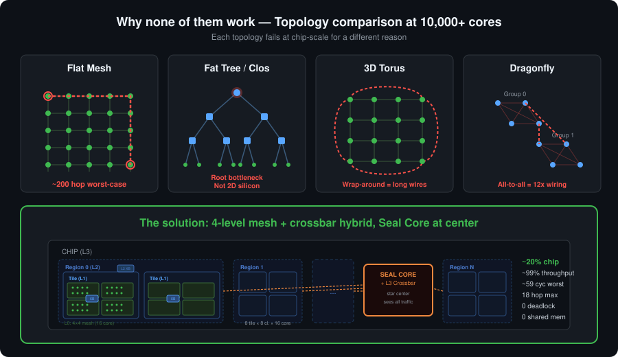
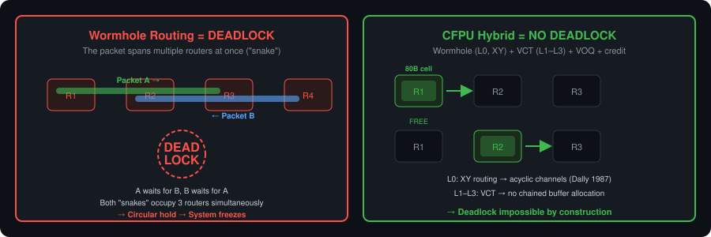
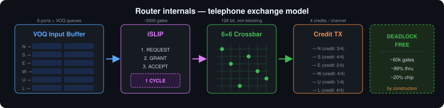

The Question We Had to Answer
The Cognitive Fabric Processing Unit (CFPU) is not a conventional processor. We're not building a single large, fast core — we're building thousands of small, independent CIL-native cores that communicate through messages, share no memory, and each run their own actor program. Think of it as an Akka.NET cluster cast in silicon.
But when we started designing the Symphact — the operating system for this chip — we discovered that our architecture document had no answer to the biggest challenge of all.
How do 10,000+ processor cores talk to each other inside a single chip?
What the Textbook Says — and What It Doesn't
The Network-on-Chip (NoC) literature has known the fundamental topologies for decades. We evaluated every one of them at the 10,000+ Rich Core / chip scale:
Flat mesh (2D grid) — the simplest. Every core talks to its four neighbors. The Cerebras wafer-scale chip uses this. But at 10,000 cores the grid is 100×100, and the most distant cores are ~200 hops apart. Unacceptable latency.
Fat tree (Clos network) — the darling of data centers. Any two points are ~6 hops apart. A pure fat tree's root switch is a bottleneck and single point of failure — but these can be solved with multiple roots and horizontal links between levels. However, when you add horizontal links to a fat tree, the topology converges to a hierarchical mesh — and we can do better there.
3D torus — the Fugaku supercomputer's topology. Wrap-around links halve the diameter, but the wires running from one chip edge to the other are physically problematic.
Dragonfly — the Frontier supercomputer's choice. All-to-all connections within groups, sparser links between groups. Excellent between supercomputer cabinets. But on-chip, the all-to-all wiring requires ~12× more wires than a mesh. Not realistic.
None of them were convincing.

The Turning Point: Telecom Already Solved This
The solution came not from chip design, but from telecommunications.
ATM (Asynchronous Transfer Mode) networks in the 1990s were built on a simple but deep insight:
If every packet is the same size, the switching hardware becomes dramatically simpler.
ATM used fixed 53-byte cells. We chose 64-byte payload (16-byte header + 64-byte payload = 80 bytes) — but the principle is the same. Fixed cell = deterministic timing = simple hardware = fewer transistors = more processor cores fit on the chip.
Then came the second insight from telephone exchanges: Virtual Output Queuing (VOQ). In a conventional router, when one packet is blocked, everything behind it stalls too — this is Head-of-Line (HOL) blocking. VOQ maintains a separate queue for each output port. If we're blocked toward port A, packets heading for port B continue unimpeded. This single technique raises throughput from ~58% to ~99%.
The third element: the iSLIP scheduler (Nick McKeown, Stanford, 1999). It schedules the maximum number of parallel transfers every cycle, with round-robin fairness, in a single clock cycle. ~3,000 gates — negligible cost.
The Deadlock That Doesn't Exist
One of the greatest fears in on-chip networks is deadlock — when packets circularly wait for each other and the entire system freezes. The traditional solution: complex routing constraints, Virtual Channels, formal proofs.
In our system, deadlock doesn't exist. We didn't solve it — we eliminated it.
The CFPU uses a hybrid switching model, optimized per level. At the L0 mesh, wormhole routing is used: the header flit is forwarded immediately, body flits follow in a pipeline. XY dimension-ordered routing (Dally & Seitz, 1987) creates a total ordering on channels — cyclic dependencies cannot form.
At the L1–L3 crossbars, Virtual Cut-Through (VCT) is used: the cell is fully received into the input buffer before switching. No chained buffer allocation across hops. VOQ prevents HOL-blocking from spreading, and credit-based flow control prevents buffer overflow.

The Three Design Principles
1. Security — Non-Negotiable
The CFPU's shared-nothing architecture is not a performance optimization — it's a security guarantee. No shared memory means no pointer manipulation, no side-channel attacks on a neighbor's data, no isolation violation.
Any proposal that introduces shared memory — whether a chip-wide cell pool, zero-copy pointer sharing, or shared buffers — is automatically rejected. Cores send messages by copying, not by passing pointers. Slower? Yes. But secure.
2. Core Count — Computational Power
Every gate spent on the router is a gate missing from a processor core. Making the interconnect “smarter” increases router size — and decreases core count.
The math is simple: with adaptive routers, ~9,700 cores fit on the chip; with XY routing, ~10,500. Adaptive routing improves latency, but the 800 lost cores represent more computational capacity than the better latency recovers.
3. Message Speed — But Simply
The network must be fast — but not “smart.” Smart routers are large; large routers leave room for fewer cores. The solution: simple but proven techniques from telecommunications.
The Final Architecture
The final design decision emerged from two key insights. First: mesh is optimal at the core level (physically adjacent, short wires), but at higher levels a crossbar is more efficient — deterministic 1 hop, small port count (8–12), telecom-style VOQ+iSLIP. Second: the Seal Core at the chip center, co-located with the L3 crossbar, means every cross-region packet naturally passes through it — enabling security inspection without extra routing.
10,000+ Rich Cores / chip (parameterizable, adapts to die size)
4-level hierarchy:
L3: Chip ── 10 regions, star topology, Seal Core + crossbar at center
└── L2: Region ── 8 tiles, 8×8 crossbar (region center), serial link
└── L1: Tile ── 8 clusters, 8×8 crossbar (tile center)
└── L0: Cluster ── 16 Rich Cores, 4×4 mesh
16 × 8 × 8 × 10 = 10,240 cores (ref. config, 5nm, 800 mm²)
Every crossbar sits at the geometric center of its level — equal maximum distance to all ports, fair and deterministic latency. At L3, star topology: every region connects directly to the central Seal Core + crossbar — cross-region traffic is always exactly 2 hops.
| Level | Topology | Ports | Link type | Why? |
|---|---|---|---|---|
| L0: Core | 4×4 mesh | 16 | Parallel | Physically adjacent, short wires |
| L1: Cluster | 8×8 crossbar | 8 | Parallel | Few ports, fixed 1 hop, VOQ+iSLIP |
| L2: Tile | 8×8 crossbar | 8 | Serial 10× | Medium distance, serial link |
| L3: Region | Star (Seal Core center) | 10 | Serial 10× | Seal Core sees all traffic |
| Element | Choice | Origin |
|---|---|---|
| Cell | 16 + 64-byte fixed (80 B) | ATM (1985) |
| Buffers | Virtual Output Queuing | Telecom switches (1990s) |
| Scheduler | iSLIP | Stanford (1999) |
| Flow control | Credit-based | Telecom switches |
| Routing | XY (L0 mesh) + crossbar (L1–L3) | NoC + telecom |
| Switching | Wormhole (L0) + VCT (L1–L3) | NoC + telecom |
Throughput: ~98% (Turbo, VOQ + iSLIP), ~75% (Compact).
Max hops: 18 (worst-case, cross-region).
Max latency: ~139 cycles worst-case (~278 ns @ 500 MHz).
Deadlock: impossible (Wormhole + XY + VCT + VOQ + credit).
Seal Core: chip center, sees all cross-region traffic.
Security compromise: zero.

What We Learned
From the NVIDIA GPU we learned hierarchical aggregation — their 24,000 CUDA cores share a single 12-port crossbar because SMs aggregate traffic. We do the same: 10,000+ cores, but the chip-level mesh is only 16 ports.
From the Apple M-series we learned cluster-based organization and independent power domains — a sleeping cluster draws zero power.
From telephone exchanges we learned VOQ, iSLIP, and credit-based flow control. These techniques have been proven for decades in systems with millions of ports.
What We Rejected
- Zero-copy / shared memory — security vulnerability
- Adaptive routing — not worth the core loss
- In-network computation — 44% router area, half the cores disappear
- Fat tree — with horizontal links converges to hierarchical mesh; crossbar solution is better
- Dragonfly — on-chip all-to-all wiring is unrealistic
The Seal Core Is Not a Bottleneck
The Seal Core’s crypto engine exclusively performs code authentication. At boot, verifying all core code takes ~256 ms (10,240 cores, 5nm). Runtime hot code loading: <0.1% utilization. The Seal Core sleeps most of the time.
L3 Crossbar Scaling
The L3 crossbar handles cross-region routing independently — the Seal Core’s crypto engine is not involved. More cores = more cross-region traffic. At 10k cores the L3 crossbar runs at ~25% utilization — plenty of headroom to grow.
Power-Gating at the Chip Center
Both the Seal Core and the L3 crossbar are power-gated. When there is no cross-region traffic and no code loading, everything at the chip center sleeps.
The Deepest Insight
Processor design and network design are the same problem — many independent units that need to communicate quickly, reliably, and securely. Telecommunications solved this problem decades ago. We just transplanted it to silicon.
Open Source
The CLI-CPU project is fully open source. The entire design process, every decision and rationale, is publicly available.
The CFPU is not a conventional processor. It doesn't aim to be faster on a single thread — it aims to run thousands of threads in parallel, securely, deterministically. The interconnect is the foundation of that vision.